Entity relationships (crow's-foot notation). All entities are tenant-scoped by orgId.
Each line end has two marks: the one nearest the entity is the maximum (one or many), the one just inside it is the minimum (zero or one). Read each end, then combine — e.g. “one client has zero-or-many projects.”
||)o|) — optional|{)o{) — optional| scopes | tenant boundary — the child row carries an orgId and is only ever visible within that Clerk org. |
| has | ownership by foreign key — the child stores the parent's id (e.g. clientId, projectId). |
| embeds | the child is a sub-document stored inside the parent (loaded & saved together, never queried alone). |
| references | points at another entity by id/key without owning it (e.g. an assembly line → a material). |
| provenance | an id copied into a frozen estimate snapshot so a line can trace back to its source — deliberately not a live join. |
Note: ORGANIZATION isn't a MongoDB collection — orgs live in Clerk. It's drawn as the conceptual root; in the DB it exists only as the orgId string on every document.

Diagram source: docs/data-model.mmd · vector: docs/data-model.svg